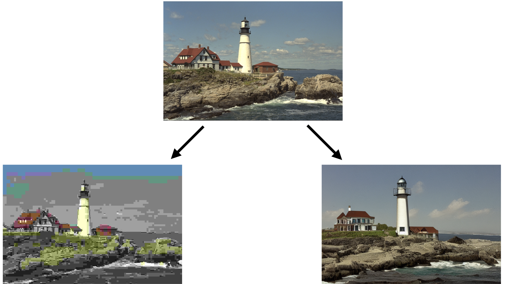
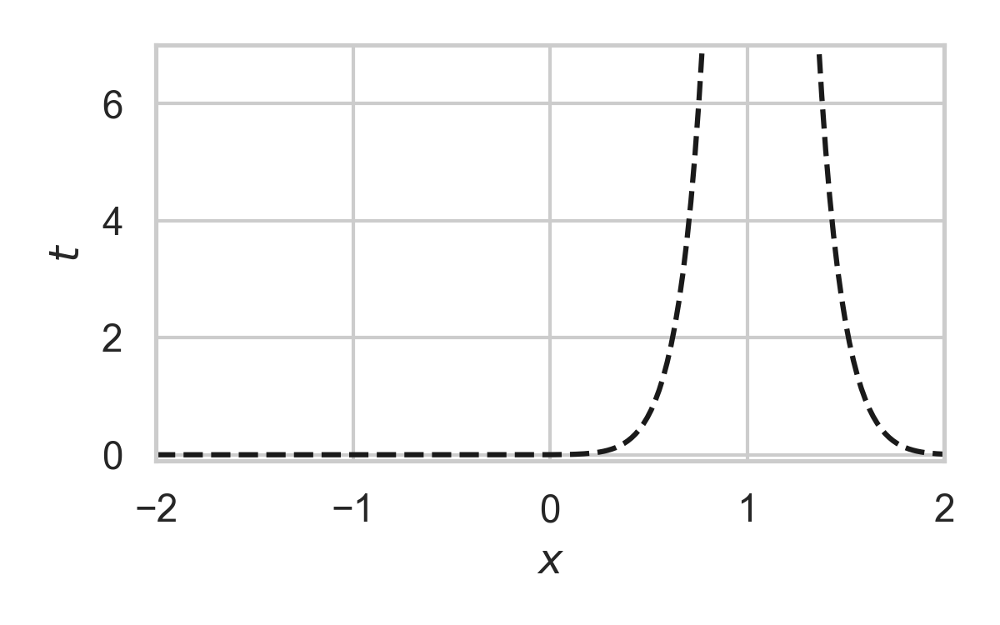

Practical Channel Simulation for Better Neural Data Compression
Gergely Flamich
20/06/2024
gergely-flamich.github.io
In Collaboration With


motivation and background
realistic lossy compression
Right-hand image from Careil et al. [1]
differentially private federated learning

transform coding

desiderata
Transform: computationally lightweight
Encoder/Decoder: short codelength, fast runtime
formal problem statement
- \(X, Y \sim P_{X, Y}\)
- Given \(X \sim P_X\), encoder sends code \(C\) so that decoder can compute \(Y \sim P_{Y \mid X}\)
- Li and El Gamal [2]:
\[ {\color{red} I[X; Y]} \leq \mathbb{E}[|C|] \leq {\color{red} I[X; Y]} + {\color{blue} \log (I[X; Y] + 1) + 4} \]
- short codelength
core problem
Agustsson and Theis [3]:

- fast runtime
Sharper computational bounds
Complexity measures
\(D_{KL}[Q || P] = \mathbb{E}_X\left[\log \frac{dQ}{dP}(X)\right]\)
\(D_\infty[Q || P] = \sup_x\left\{ \log \frac{dQ}{dP}(x) \right\}\)
Can have \(D_{KL}[Q || P] \ll D_\infty[Q || P]\)
General results
F. and Wells [5]:
A different computational framework
Let \(Q \gets P_{Y \mid X}\) and \(P \gets P_Y\).
Goc and F. [6]:
\(X_1, X_2, \dots, X_N, \dots, X_K \sim P\)
sample complexity results
Goc and F. [6]:
Fast channel simulation
- Sampling as search
- Exploit structure to accelerate search
GPRS with \(P = \mathcal{N}(0, 1), Q = \mathcal{N}(1, 1/16)\)

GPRS with \(P = \mathcal{N}(0, 1), Q = \mathcal{N}(1, 1/16)\)

GPRS with \(P = \mathcal{N}(0, 1), Q = \mathcal{N}(1, 1/16)\)

GPRS with \(P = \mathcal{N}(0, 1), Q = \mathcal{N}(1, 1/16)\)

GPRS with \(P = \mathcal{N}(0, 1), Q = \mathcal{N}(1, 1/16)\)

GPRS with \(P = \mathcal{N}(0, 1), Q = \mathcal{N}(1, 1/16)\)

GPRS with \(P = \mathcal{N}(0, 1), Q = \mathcal{N}(1, 1/16)\)

Fast GPRS with \(P = \mathcal{N}(0, 1), Q = \mathcal{N}(1, 1/16)\)

Fast GPRS with \(P = \mathcal{N}(0, 1), Q = \mathcal{N}(1, 1/16)\)

Fast GPRS with \(P = \mathcal{N}(0, 1), Q = \mathcal{N}(1, 1/16)\)

Fast GPRS with \(P = \mathcal{N}(0, 1), Q = \mathcal{N}(1, 1/16)\)

Fast GPRS with \(P = \mathcal{N}(0, 1), Q = \mathcal{N}(1, 1/16)\)

Fast GPRS with \(P = \mathcal{N}(0, 1), Q = \mathcal{N}(1, 1/16)\)

Analysis of faster GPRS
Now, encode search path \(\pi\).
\(\mathbb{H}[\pi] \leq I[X; Y] + \log(I[X; Y] + 1) + \mathcal{O}(1)\)
\(\mathbb{E}[\lvert\pi\rvert] = I[X; Y] + \mathcal{O}(1)\)
This is optimal.
Computationally Lightweight ML-based data compression
Data Compression with INRs

Image from Dupont et al. [4]
- computationally lightweight
- short codelength
Compress variational INRs!

Image from Blundell et al. [7]
üí°Gradient descent is the transform!
Compress variational INRs!

Compress variational INRs!

Theory: What next?
- Might not need perfect solution: think of error correcting codes (e.g. LDPC)
- Exploit different types of structure
- Duality between source and channel coding
Applications: What next?
- Realism constraints for INR-based compression
- More sophisticated coding distributions
- Apply to different types of neural representations
Contributions
- First linear-in-the-mutual-information runtime algorithm
- Established more precise lower bounds on sampling-based channel simulation algorithms
- Created state-of-the-art INR codec
References I
- [1] Careil, M., Muckley, M. J., Verbeek, J., & Lathuilière, S. Towards image compression with perfect realism at ultra-low bitrates. ICLR 2024.
- [2] C. T. Li and A. El Gamal, “Strong functional representation lemma and applications to coding theorems,” IEEE Transactions on Information Theory, vol. 64, no. 11, pp. 6967–6978, 2018.
- [3] E. Agustsson and L. Theis. "Universally quantized neural compression" In NeurIPS 2020.
References II
- [4] E. Dupont, A. Golinski, M. Alizadeh, Y. W. Teh and Arnaud Doucet. "COIN: compression with implicit neural representations" arXiv preprint arXiv:2103.03123, 2021.
- [5] G. F., L. Wells, Some Notes on the Sample Complexity of Approximate Channel Simulation. To appear at Learning to Compress workshop @ ISIT 2024.
- [6] D. Goc, G. F. On Channel Simulation with Causal Rejection Samplers. To appear at ISIT 2024
References III
- [7] C. Blundell, J. Cornebise, K. Kavukcuoglu and D. Wierstra. Weight uncertainty in neural network. In ICML 2015.